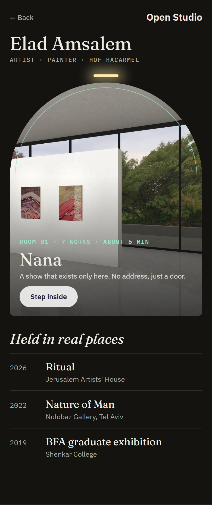
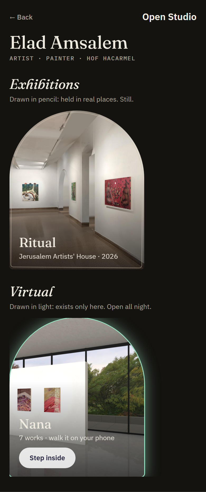
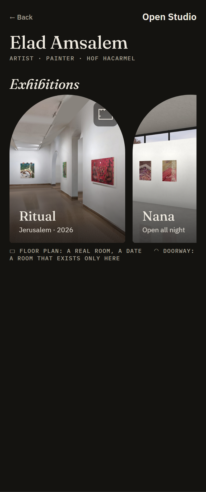
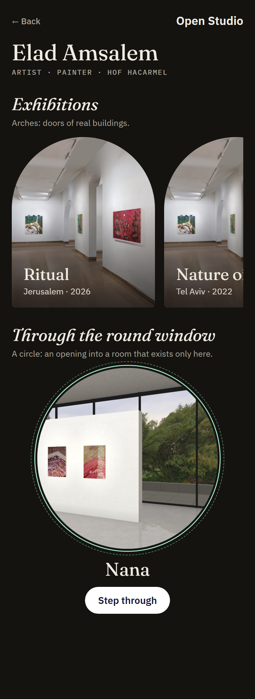
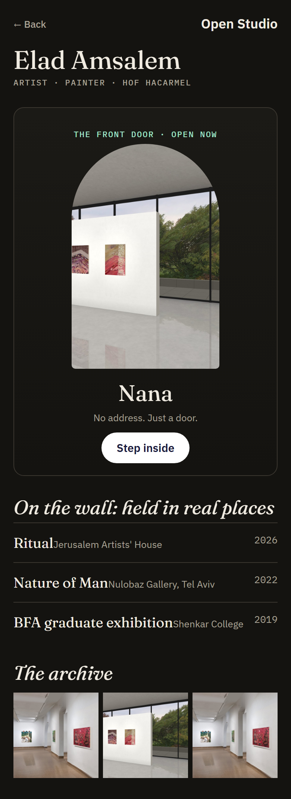

בדקתי כ־33 מקורות: מוזיאונים ופלטפורמות תערוכות מקוונות, מערכות עיצוב, נגישות, ומשחקים (איך מציגים "כניסה לעולם"). המסקנות החשובות (האנגלית של המחקר המלא ב־studio/design/real-vs-virtual/RESEARCH.md):
מה לא ודאי: עמודים חשובים לא נטענו (Artsy, Tate, MoMA, מוזיאון ישראל, Netflix ועוד), ולכן לא ראיתי איך הם מסמנים בפועל. את העברית בניסוחים כתבתי אני ואתה צריך לכוון אותה. טענת "חם מול קר" בצבע לא אומתה.

למעלה, מעל העבודות, קשת אחת גבוהה לרוחב המסך, קשת שפתוחה מעט בתחתיתה כמו דלת פתוחה, עם מנורה קטנה מעל המשקוף. בתוכה החדר התלת־ממדי נע לאט כאילו הוא מואר מבפנים.
"תערוכה שקיימת רק כאן. בלי כתובת, רק דלת."
A show that exists only here. No address, just a door.
ROOM 01 · 7 WORKS · ABOUT 6 MIN
כפתור אחד: "כניסה" (Step inside). התערוכות האמיתיות מתחת, כיומן של שורות (שנה, שם, מקום), בסגנון שלט ליד תערוכה.
בינונית. דף האמן נבנה מחדש בראש העמוד, והשורה של האמיתיות הופכת לרשימה. הסיכון: אמן בלי תערוכה וירטואלית צריך מצב ריק יפה.

הקשת אותה קשת, אבל מצוירת בחומר אחר. תערוכה אמיתית: קו עפרון כפול עם רעד קל, גרגר נייר ותצלום נייח. תערוכה וירטואלית: קו אחד נקי ומואר עם זוהר רך, ופנים קר וזוהר מעט יותר.
אמיתיות: "נתלו במקומות אמיתיים. עומדות במקום."
וירטואליות: "מצוירות באור. פתוחות כל הלילה."
Drawn in pencil: held in real places. Still. / Drawn in light: exists only here. Open all night.
נמוכה עד בינונית. הקו כבר מצויר כקו עפרון בקוד, ובונים קו שני נקי. הסיכון: ההבדל עדין, ולכן כדאי לשלב אותו עם כיוון א׳ או ג׳.

כל כרטיס נושא סמל קטן ומצויר בפינה: תערוכה אמיתית נושאת תוכנית קומה זעירה (חדר שקיים ואפשר למדוד), תערוכה וירטואלית נושאת פתח בפרספקטיבה (חדר שרואים דרכו). אין צורך בטקסט, והסמל הוא גם עוגן לטקסט חלופי.
אמיתית: "הוצגה ב־[מקום], 2023". וירטואלית: "פתוחה כל הלילה".
Held at [place], 2023 / Open all night
נמוכה. הסיכון: סמלים קטנים נקראים לא נכון בלי מפתח, ולכן צריך לשלב מילה מתחת.

קשתות שייכות לבניינים אמיתיים (כניסה, טקס). תערוכה וירטואלית היא פתח עגול, כמו שער ירח או חלון בחדר: עיגול שרואים דרכו אל חדר אחר, עם טבעת מקווקוות עדינה סביבו. הצורה לבדה אומרת "זה פתח לעולם אחר".
"דרך החלון העגול" ו־"עוברים דרכו" במקום "כניסה".
Through the round window · Step through
בינונית. הסיכון הגדול ביותר: מחליש את הקשת, שהיא הזהות של האפליקציה. צריך לבדוק אותו מול כיוון ב׳ שמשאיר את הקשת.

עמוד האמן נקרא מלמעלה למטה כמו בניין בלילה. הדלת (למעלה): התערוכה הווירטואלית, עם מנורה מעל המשקוף. הקיר: התערוכות האמיתיות כשורת שלטים עם שנה ומקום, כמו קיר של שלטי תערוכות. הארכיון: העבודות עצמן.
"הדלת הקדמית · פתוחה עכשיו", ו־"על הקיר: נתלו במקומות אמיתיים".
The front door · open now / On the wall: held in real places
גבוהה: עיצוב מחדש של כל העמוד. הסיכון: תערוכות אמיתיות בלי תמונה נראות חלשות יותר, ויש לשקול להשאיר להן תמונה קטנה.
| כיוון | ההפרדה | נגישות (בלי צבע) | עלות | סיכון |
|---|---|---|---|---|
| א׳ הדלת הפתוחה | מיקום וגודל: הראשונה, גדולה | טובה | בינונית | מצב ריק |
| ב׳ גרפיט מול אור | חומר הקו | טובה (קו כפול מול בודד) | נמוכה עד בינונית | עדין מדי לבד |
| ג׳ תוכנית ופתח | סמל בפינה | טובה עם טקסט חלופי | נמוכה | סמל קטן |
| ד׳ חלון עגול | צורה אחרת | טובה מאוד | בינונית | מחליש את הקשת |
| ה׳ הבניין | מבנה העמוד כולו | טובה | גבוהה | עיצוב מחדש |
לשלב את א׳ ו־ב׳. התערוכה הווירטואלית היא "הדלת הפתוחה" בראש העמוד (א׳), והקו שלה מואר ונקי, בעוד הקשתות של האמיתיות נשארות בעיפרון כפול (ב׳). כך יש שני סימנים שאינם טקסט (מקום וגודל, וחומר הקו), וכיוון ג׳ אפשר להוסיף כסימן שלישי בפינה אם נרצה. לא הייתי מתחיל מד׳ (מסוכן לקשת) או מה׳ (גדול).
| וירטואלית | אמיתית |
|---|---|
| תערוכה שקיימת רק כאן · בלי כתובת, רק דלת A show that exists only here · No address, just a door | הוצגה ב־[מקום], [שנה] Held at [place], [year] |
| פתוחה כל הלילה Open all night | נתלתה במקום אמיתי Hung in a real place |
| כניסה Step inside | לצפות בתערוכה See the show |
את העברית כתבתי אני, ולא מקור חיצוני. כדאי שתעבור עליה ותתקן לפי הקול שלך.
המחקר המלא, עם 32 טכניקות ומקורות: studio/design/real-vs-virtual/RESEARCH.md. ההדמיות הן מוקאפים על המסכים האמיתיים (Nana ו־Ritual), לא קוד שרץ באפליקציה.